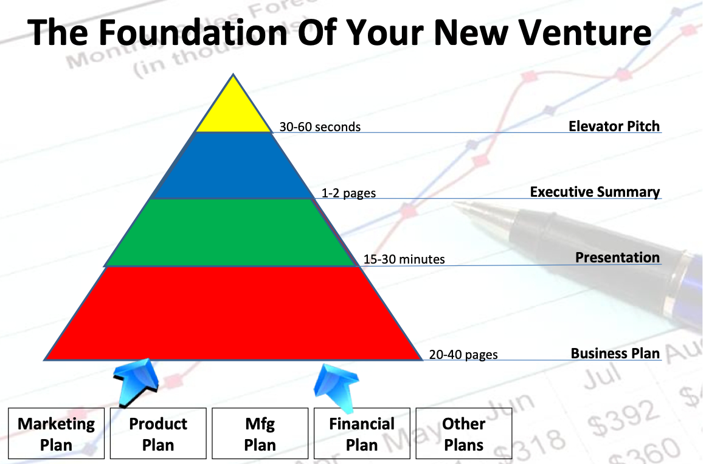

Lecture 10: Financing your leadership: From ROI to Structuring for Sustainability
Business First
Businesss Case 101
Building a Business Case involves estimating financial metrics that ensure sustainability and growth.
- Market Size Estimation (TAM-SAM-SOM)
- Cost Structure & Pricing
- Revenue Forecasting
- Return on Investment (ROI)
Why are these important? Without a strong financial case, even the best ideas can struggle to survive. These metrics help determine if the startup is a viable business.
Question for Students: Why do you think investors care so much about these numbers?
What is a Business Plan?
- What is a Business Plan?
- Elements of a Business Plan
- Investor Presentation
Business Plan via Components

Why do you need a business plan?
- Serve as a disciplined focal thinking point for building the business
- To raise financing
- To attract talent and management team
- To pursue strategic partners
- After financing, it becomes the operational plan, constantly updated
Business Plan Outline
- Executive Summary
- Company description: history, status, background/industry, objectives, strategies, etc.
- Management Team: Founders and key employees, entrepreneurial/industry/operational experience
- Products: description and comparisons, innovative features (IP), Applications, Tech, Dev & R&D Support, Evolution
- Target Market: Summary and industry overview, analysis and forecast, industry trends, initial products/Total Market
- Marketing Program: Objective, strategy, communication and PR, strategic alliances, sales and distribution channels, customers -Financing Requirements
- Competition
- Similar offerings, product comparisons, company comparisons, market share, outlook
- Business Model
- Manufacturing, Service, Facilities, Staffing, Owernership, Milestones, Capital required, Financial Forecast, etc.
0: Business Model
- Your company’s plan to make money
- How can you transform your technology or scientific idea into economic value?
- Who will pay? How much? How often?
- Some possible business models
- Licenses (perpetual or term, your AAA game)
- Subscription (Much more common now with most softwares)
- Pay-per-use (bikeshare)
1: Key Concepts for Financial Planning
Building a Business Case involves estimating financial metrics that ensure sustainability and growth.
Key Concepts: - Market Size Estimation (TAM-SAM-SOM) - Cost Structure & Pricing - Revenue Forecasting - Return on Investment (ROI)
Why are these important?
Without a strong financial case, even the best ideas can struggle to survive. These metrics help determine if the startup is a viable business.
Question for Students:
Why do you think investors care so much about these numbers?
2: Market Size Estimation
Market Size Estimation helps define the potential for a startup’s product.
TAM (Total Addressable Market)
Total potential revenue if every potential customer bought the product.SAM (Serviceable Available Market)
Subset of TAM within the startup’s reach based on product reach and location.SOM (Serviceable Obtainable Market)
Realistic portion of SAM that the startup aims to capture.
Practical Tip: To get a good SOM, research similar products and look at how much market share they captured in their first few years.
Class Activity Idea:
Estimate SOM for a common product (e.g., reusable water bottle) in your local area. Think about factors that might reduce the number from TAM to SOM.
3: Cost Structure & Pricing
Cost Structure - Defines all expenses involved in producing, distributing, and selling the product.
- Fixed Costs: Costs that don’t change (e.g., rent, salaries).
- Variable Costs: Costs that vary with production levels (e.g., materials, shipping).
Pricing Strategies:
- Cost-Plus Pricing: Add a markup to production costs. Common but might ignore competitor pricing.
- Value-Based Pricing: Price based on perceived customer value. This often allows for higher prices, especially if your product has unique benefits.
Class Discussion Prompt:
How do you think eco-friendly products should be priced compared to regular ones? Is it fair to charge more? Why or why not?
4: Revenue Forecasting
Revenue Forecasting - Project the expected revenue based on market share, pricing, and sales strategy.
Steps: 1. Estimate Sales Volume: Based on SOM and realistic targets. 2. Identify Revenue Streams: Will you make money through direct sales, subscriptions, partnerships, etc.? 3. Project Revenue Over Time: Map out monthly, quarterly, or annual projections.
Why is this useful?
A clear revenue forecast can prevent cash flow issues and guide operational planning.
Try this for your startup::
Take your SOM and estimate a simple revenue projection for the first year. What would be a reasonable growth rate each month?
5: Return on Investment (ROI) & Break-Even Analysis
ROI (Return on Investment) - Measures profitability by comparing net profit to initial investment.
- Formula: (Net Profit / Initial Investment) x 100%
- Purpose: Shows investors how quickly they might see returns.
Break-Even Analysis - Point at which revenue covers all costs.
- Formula: Fixed Costs / (Price per Unit - Variable Cost per Unit)
- Purpose: Useful to know how long it will take to cover startup costs.
For your startup::
Think about a product you buy regularly. At what price point would it be too expensive? What about too cheap?
6: Cash Flow Management
Cash Flow Management - Tracking inflows and outflows to ensure positive cash flow.
- Positive Cash Flow: Ensure inflows (sales) exceed outflows (expenses).
- Cash Flow Projection: Plan expected inflows and outflows monthly, noting any potential cash shortages.
- Maintain Liquidity: Reserve funds for unexpected expenses.
Tip: Cash flow issues are a leading cause of startup failure. Keeping projections realistic is essential.
Discussion:
Can anyone think of a company that might struggle with cash flow? Why is managing cash important even if a company is profitable?
7: Summary of Key Financial Planning Concepts
Financial Planning Key Takeaways:
- Market Size Estimation - Helps define the potential market and growth.
- Cost Structure & Pricing - Enables balancing of costs with revenue.
- Revenue Forecasting - Maps out short- and long-term growth.
- ROI & Break-Even - Key profitability metrics.
- Cash Flow Management - Essential for day-to-day operations.
These concepts collectively support a strong, sustainable business case.
8: Burn Rate & Runway, beyond revenue, cost and profit margins (YMMV, subscription only)
Burn Rate - Rate of cash expenditure per month. Helps determine operational efficiency and areas to reduce costs if needed.
Runway - The amount of time before cash reserves are depleted.
Formula: Runway (months) = Cash Reserves / Monthly Burn Rate
9: Unit Economics & Sustainable Pricing
Unit Economics - Measure of profitability per product/service sold.
- Revenue per Unit minus Cost per Unit: Ensures each sale is profitable.
- Sustainable Pricing: Sets prices that reflect quality, cover costs, and align with the brand’s eco-friendly mission.
10: CLV vs. CAC for Financial Sustainability
Customer Lifetime Value (CLV) - Total revenue from a customer over the CS relationship.
Customer Acquisition Cost (CAC) - Cost to acquire a new customer.
For Financial Sustainability:
CLV should exceed CAC significantly to ensure profitability.
Oura Ring as an example
One of the first smart rings, initially is buy-out, but now requries subscription to see more data. How do we see this from a CLV vs. CAC angle?
11: Revenue Diversification & Economic Resilience
Revenue Diversification - Having multiple income streams to reduce financial risk.
- Subscription Model: Predictable revenue from monthly/annual plans.
- Bulk Orders & Partnerships: Strategic alliances with larger companies.
- Retail & Direct Sales: Expanding to online direct-to-consumer sales.
Economic Resilience: Planning for changes in costs due to inflation, interest rates, and other external factors.
Why it matters: Sustainability-focused businesses often face higher material costs, making revenue diversification and cost control essential.
12: Financial Sustainability Analysis Framework
Balancing profitability with long-term resilience.
Angles of Consideration:
- Cash Flow Management
- Revenue Model & Diversification
- Cost Structure & Pricing Strategy
- Customer Economics
- External Factors & Risk Management
Each angle has specific sub-items to consider.
13: Cash Flow Management Table
| Component | Description | Essential? |
|---|---|---|
| Burn Rate | Monthly cash expenditure. Essential to track spending pace. | |
| Runway | Time before cash reserves are depleted. (Runway = Cash / Burn Rate) | |
| Positive Cash Flow | Ensuring inflows (sales, investments) exceed outflows (expenses) over time. | Yes |
| Liquidity Reserves | Reserve funds to cover unforeseen expenses (e.g., 3-6 months of fixed costs). |
Estimate your burn rate and runway. Do you have a plan to maintain positive cash flow?
14: Revenue Model & Diversification Table
| Component | Description | Essential? |
|---|---|---|
| Primary Revenue Model | Main way the business earns revenue (e.g., direct sales, subscriptions). | Yes |
| Recurring Revenue | Revenue that is predictable over time (e.g., monthly or annual subscriptions). | Yes |
| Secondary Income Streams | Diversified income sources (e.g., partnerships, add-on services). | |
| Revenue Growth Potential | Opportunity for scaling revenue over time (e.g., expanding market reach or product lines). |
Identify your primary and secondary revenue streams. How will you secure recurring revenue?
15: Cost Structure & Pricing Strategy Table
| Component | Description | Essential? |
|---|---|---|
| Fixed Costs | Costs that do not vary with production (e.g., rent, salaries). | |
| Variable Costs | Costs that change with production volume (e.g., materials, shipping). | |
| Unit Economics | Revenue and costs per unit sold. Ensure profitability per unit. | Yes |
| Pricing Strategy | Pricing method (e.g., cost-plus, value-based) that aligns with market and covers costs. | Yes |
Calculate unit economics and assess whether your pricing strategy can cover costs while staying competitive.
16: : Customer Economics Table
| Component | Description | Essential? |
|---|---|---|
| Customer Lifetime Value (CLV) | Total revenue expected from a single customer over their relationship. | |
| Customer Acquisition Cost (CAC) | Average cost to acquire a new customer (e.g., marketing expenses). | Yes |
| CLV vs. CAC Ratio | Ratio showing sustainability; CLV should exceed CAC significantly. | |
| Retention Rate | Percentage of customers retained over time; affects CLV. | Yes |
Compare CLV to CAC. Are customer acquisition costs sustainable based on expected lifetime value?
17: 6: External Factors & Risk Management Table
| Component | Description | Essential? |
|---|---|---|
| Economic Factors | Impact of inflation, interest rates, or economic downturns on costs and revenue. | |
| Supplier Reliability | Ability of suppliers to meet demand, especially during disruptions. | |
| Competitive Landscape | Level of market saturation, major competitors, and barriers to entry. | Yes |
| Contingency Planning | Strategies to adapt to unforeseen risks (e.g., alternative suppliers, emergency funds). |
Identify potential external risks. Do you have contingency plans in place?
18: Summary & Key Takeaways
Sustainability Factors to Monitor: 1. Burn Rate and Runway: Maintain a positive cash flow. 2. Revenue Diversity: Avoid over-reliance on a single revenue source. 3. Cost Efficiency and Pricing: Ensure unit profitability. 4. Customer Economics: Retain customers with a CLV that justifies CAC. 5. Risk Management: Plan for external factors that could impact your finances.
19: Presenting to Investors: Overview
- Objective: Get another meeting/initiate due diligence (Vote with confidence)
- Summary of key points, not the WHOLE BUSINESS PLAN
- NOt selling product, selling stock
- Begin by asking the right questions
- Presentation time typically no more than 20 minutes for a real investor meeting
- Leave out information for follow-up questionxs
20: Presenting to Investors: Content
- What an investor (ourselves) wants to know:
- Who you are
- What you have acoomplished
- What you plan to do
- Focus on the “Big Four”:
- Management Team
- Market
- Product (keep light, demo OPTIONAL)
- Finance
- Maximum Effort vs. Show of Muscle
Recap
- Business Plan Overview and Components
- Financial Planning: Concepts and checklists of possible items to cover: What matters more to you?
- Presenting to investors: Overview and Content Advisory